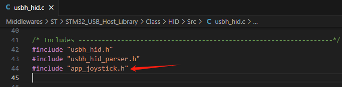
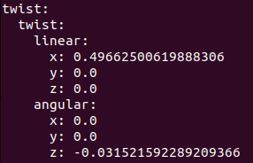
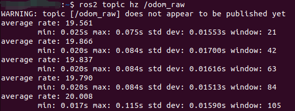

Управление через USB-геймпад
- Цель эксперимента
- Подключение оборудования
- Анализ основного кода
- Компиляция, загрузка и прошивка firmware
- Результаты эксперимента
1. Цель эксперимента
Изучить использование функции USB-хоста платы управления STM32 для приёма и разбора данных с USB-геймпада.
2. Подключение оборудования
Как показано на рисунке ниже, плата управления STM32 имеет встроенный интерфейс USB-хоста. Вставьте USB-приёмник геймпада в интерфейс USB-хоста на плате управления. USB-приёмник геймпада и беспроводной геймпад нужно подготовить самостоятельно.
Подключите USB-кабель Type-C к компьютеру и к порту USB Connect на плате управления STM32.
Схема подключения беспроводного геймпада и USB-приёмника геймпада

3. Анализ основного кода
Путь к исходному коду программы:
Board_Samples/STM32_Samples/USB_Host
В соответствии с назначением выводов, USB-DP подключён к PA12, а USB-DM — к PA11.
В соответствии с компонентом USB_HOST, предоставляемым STM32CUBEIDE, настройте USB в режим HID.


Получение данных геймпада в callback-функции прерывания USB.
void USBH_HID_EventCallback(USBH_HandleTypeDef *phost)
{
// USBH_UsrLog("Product : %d", phost-
>device.CfgDesc.Itf_Desc[0].bInterfaceProtocol);
if (phost->device.CfgDesc.Itf_Desc[0].bInterfaceProtocol ==
HID_KEYBRD_BOOT_CODE)
{
USBH_UsrLog("KeyBoard device value...");
USBH_HID_GetKeybdInfo(phost);
}
else if (phost->device.CfgDesc.Itf_Desc[0].bInterfaceProtocol ==
HID_MOUSE_BOOT_CODE)
{
USBH_UsrLog("Mouse device value...");
USBH_HID_GetMouseInfo(phost);
}
else if (phost->device.CfgDesc.Itf_Desc[0].bInterfaceProtocol == 0x00)
{
USBH_HID_GetJoystickInfo(phost);
}
}

Если данные прочитаны успешно, возвращаются данные структуры joystick_info.
HID_JOYSTICK_Info_TypeDef *USBH_HID_GetJoystickInfo(USBH_HandleTypeDef *phost)
{
if (USBH_HID_JoystickDecode(phost) == USBH_OK)
{
return &joystick_info;
}
else
{
return NULL;
}
}
Структура joystick_info хранит текущее состояние геймпада. Выводимые далее данные упорядочены именно в этой последовательности.
typedef struct _HID_JOYSTICK_Info
{
uint8_t left_axis_x;
uint8_t left_axis_y;
uint8_t right_axis_x;
uint8_t right_axis_y;
uint8_t pad_arrow:4;
uint8_t left_hat:1;
uint8_t right_hat:1;
uint8_t select:1;
uint8_t start:1;
uint8_t pad_a:1;
uint8_t pad_b:1;
uint8_t pad_x:1;
uint8_t pad_y:1;
uint8_t reserved:4;
uint8_t l1:1;
uint8_t l2:1;
uint8_t r1:1;
uint8_t r2:1;
} HID_JOYSTICK_Info_TypeDef;
Если данные геймпада успешно прочитаны и разобраны, текущие значения геймпада выводятся в терминал.
static USBH_StatusTypeDef USBH_HID_JoystickDecode(USBH_HandleTypeDef *phost)
{
HID_HandleTypeDef *HID_Handle = (HID_HandleTypeDef *) phost->pActiveClass-
>pData;
static uint32_t prev_time = 0;
if (HID_Handle->length == 0U)
{
return USBH_FAIL;
}
/*Fill report */
if (USBH_HID_FifoRead(&HID_Handle->fifo, &joystick_report_data, HID_Handle-
>length) == HID_Handle->length)
{
uint8_t* p = (uint8_t*)joystick_report_data;
uint8_t is_diff=0;
for(uint8_t i=0;i<HID_Handle->length/4;i++) {
if(old_report_data[i] != joystick_report_data[i]) {
is_diff = 1;
}
}
if(!is_diff && ((HAL_GetTick() - prev_time) < MIN_JOY_SEND_TIME_MS)) {
return USBH_OK;
}
prev_time = HAL_GetTick();
memcpy(old_report_data, p, HID_Handle->length);
#ifdef DEBUG_JOY_RAW_INFO
print_raw_data(HID_Handle);
#endif
/*Decode report */
joystick_info.pad_arrow = (uint8_t)HID_ReadItem((HID_Report_ItemTypedef *)
&prop_pad, 0U) & 0x0F;
joystick_info.left_hat = (uint8_t)HID_ReadItem((HID_Report_ItemTypedef *)
&prop_hat_switch_left, 0U) ? 1 : 0;
joystick_info.right_hat = (uint8_t)HID_ReadItem((HID_Report_ItemTypedef *)
&prop_hat_switch_right, 0U) ? 1 : 0;
joystick_info.left_axis_x = (uint8_t)HID_ReadItem((HID_Report_ItemTypedef *)
&prop_x, 0U);
joystick_info.left_axis_y = (uint8_t)HID_ReadItem((HID_Report_ItemTypedef *)
&prop_y, 0U);
joystick_info.right_axis_x = (uint8_t)HID_ReadItem((HID_Report_ItemTypedef *)
&prop_z, 0U);
joystick_info.right_axis_y = (uint8_t)HID_ReadItem((HID_Report_ItemTypedef *)
&prop_rz, 0U);
joystick_info.pad_a = (uint8_t)HID_ReadItem((HID_Report_ItemTypedef *)
&prop_btn_a, 0U) ? 1 : 0;
joystick_info.pad_b = (uint8_t)HID_ReadItem((HID_Report_ItemTypedef *)
&prop_btn_b, 0U) ? 1 : 0;
joystick_info.pad_x = (uint8_t)HID_ReadItem((HID_Report_ItemTypedef *)
&prop_btn_x, 0U) ? 1 : 0;
joystick_info.pad_y = (uint8_t)HID_ReadItem((HID_Report_ItemTypedef *)
&prop_btn_y, 0U) ? 1 : 0;
joystick_info.l1 = (uint8_t)HID_ReadItem((HID_Report_ItemTypedef *)
&prop_btn_l1, 0U) ? 1 : 0;
joystick_info.r1 = (uint8_t)HID_ReadItem((HID_Report_ItemTypedef *)
&prop_btn_r1, 0U) ? 1 : 0;
joystick_info.l2 = (uint8_t)HID_ReadItem((HID_Report_ItemTypedef *)
&prop_btn_l2, 0U) ? 1 : 0;
joystick_info.r2 = (uint8_t)HID_ReadItem((HID_Report_ItemTypedef *)
&prop_btn_r2, 0U) ? 1 : 0;
joystick_info.select = (uint8_t)HID_ReadItem((HID_Report_ItemTypedef *)
&prop_btn_select, 0U) ? 1 : 0;
joystick_info.start = (uint8_t)HID_ReadItem((HID_Report_ItemTypedef *)
&prop_btn_start, 0U) ? 1 : 0;
#ifdef DEBUG_JOY_INFO
print_joy_info(joystick_info);
#endif
return USBH_OK;
}
return USBH_FAIL;
}
Вывод текущего состояния геймпада.
static void print_pushed(uint8_t b)
{
printf("%c ", b?'O':'X');
}
static void print_joy_info(HID_JOYSTICK_Info_TypeDef joystick_info)
{
printf("Joy:");
printf("%3d ", (char)joystick_info.left_axis_x);
printf("%3d ", (char)joystick_info.left_axis_y);
printf("%3d ", (char)joystick_info.right_axis_x);
printf("%3d ", (char)joystick_info.right_axis_y);
printf("%02X ", joystick_info.pad_arrow);
print_pushed(joystick_info.left_hat);
print_pushed(joystick_info.right_hat);
print_pushed(joystick_info.select);
print_pushed(joystick_info.start);
print_pushed(joystick_info.pad_a);
print_pushed(joystick_info.pad_b);
print_pushed(joystick_info.pad_x);
print_pushed(joystick_info.pad_y);
print_pushed(joystick_info.l1);
print_pushed(joystick_info.r1);
print_pushed(joystick_info.l2);
print_pushed(joystick_info.r2);
printf("\n");
}
Определение JOY_SEND_TIME_MS для управления периодом тайм-аута вывода данных. Если состояние кнопок геймпада не изменилось, вывод происходит раз в 200 миллисекунд. Если состояние кнопок изменилось, значение выводится немедленно.
#define JOY_SEND_TIME_MS (200)
В функции App_Handle циклически вызывается MX_USB_HOST_Process для обработки данных, отправляемых USB-геймпадом.
void App_Handle(void)
{
uint32_t lastTick = HAL_GetTick();
while (1)
{
MX_USB_HOST_Process();
if (HAL_GetTick() - lastTick >= 10)
{
lastTick = HAL_GetTick();
App_Loop_10ms();
}
}
}
Поскольку USB_HOST автоматически генерируется компонентом STM32CUBEIDE, при повторной генерации кода нужно добавить импорт заголовочного файла app_joystick.h в файл Middlewares\ST\STM32_USB_Host_Library\Class\HID\Src\usbh_hid.c.
4. Компиляция, загрузка и прошивка firmware
Выберите проект для компиляции в окне управления файлами STM32CUBEIDE и нажмите кнопку компиляции на панели инструментов, чтобы начать компиляцию.

Если ошибок и предупреждений нет, компиляция завершена успешно.
Нажмите и удерживайте кнопку BOOT0, затем нажмите кнопку RESET для перезагрузки, отпустите кнопку BOOT0, чтобы войти в режим прошивки через последовательный порт. Затем используйте утилиту прошивки через последовательный порт, чтобы записать firmware на плату.
Если у вас есть ST-Link или J-Link, вы также можете прошить firmware в один клик прямо из STM32CUBEIDE — это более удобно и быстро.


5. Результаты эксперимента
Светодиод MCU_LED мигает каждые 200 миллисекунд.
Откройте программу для работы с последовательным портом (конкретные параметры показаны на рисунке ниже), и вы увидите, что данные каждого канала USB-геймпада непрерывно печатаются в терминале. Когда вы вручную двигаете стик или нажимаете кнопку на беспроводном USB-геймпаде, данные соответствующим образом изменяются: "X" означает отжатие, "O" означает нажатие. Порядок кнопок см. в параметрах структуры HID_JOYSTICK_Info_TypeDef.
Примечание: если беспроводной USB-геймпад не используется в течение некоторого времени, он переходит в спящий режим. В этом случае перед работой с геймпадом нужно нажать кнопку START, чтобы активировать геймпад, — иначе изменения значений не будут видны.